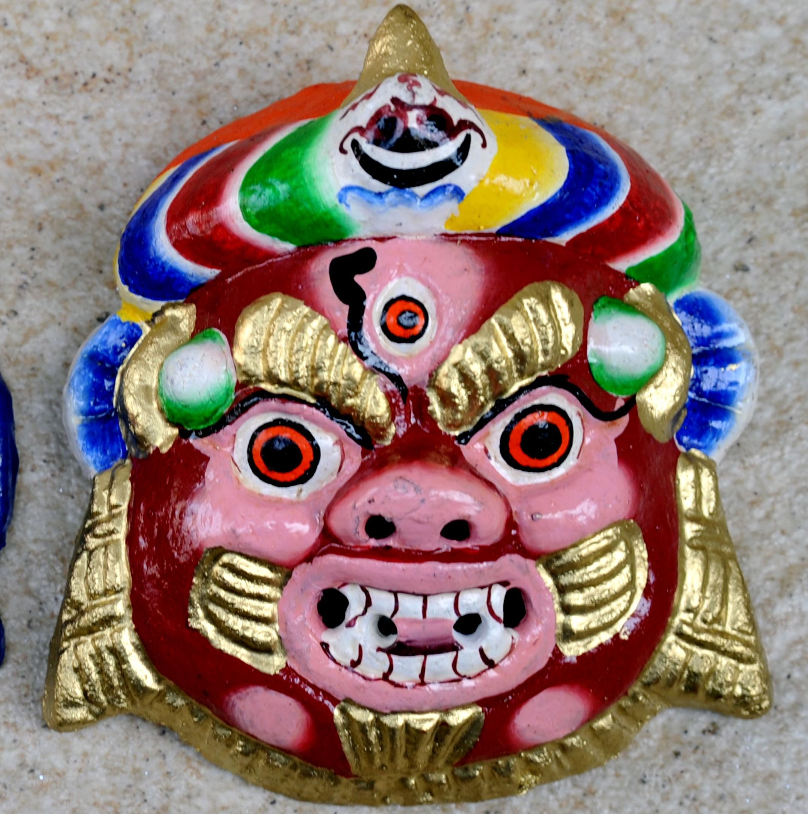

Handicraft of Sikkim
Handloom and handicrafts forms a valuable cultural trait of a society from the beginning of the civilization. The cultural pattern of a society is reflected through the quality crafts and craftsmanship of the people. The term handloom and handicrafts includes those products of a specific community which are produced manually with their indigenous technology. The handicrafts of a society often become the chief means of livelihood. It also fulfils their daily requirements and provides employment to the members of the households of the society. So handlooms and handicrafts play a magnificent role in the socio-economic development of a society. Sikkim, a small beautiful state of India is located in the eastern Himalayas with an area of 7,096 sq km. It is bounded by Nepal in the West, Bhutan in the East. Tibet in the North and West Bengal in the South. Lepcha, Bhutia & Nepalese are three ethnic communities which inhabit in Sikkim. At present the Nepalese comprise 70% of the population followed by 12% of Bhutias and about 10% of Lepchas. Nepalese and Bhutias are evenly distributed throughout the state but Lepchas are mostly confined to the northern belt of Sikkim. Lepchas are original inhabitants of Sikkim. They are basically worshipper of nature or animist. They prefer living in their own tranquil surrounding fully in tune and harmony with nature. Lepcha handloom. cane & bamboo product are famous for their artistic design. Bhutias are originally from the Tibet.
-

1. Handloom Weaving
The handloom tradition in Sikkim is very old and Lepchas women play a predominant role in handloom weaving, they begin to learn the art from a very young age and gain exceptional craftsmanship in weaving intricately colorful fabrics from cotton yarn. First, the cotton yarn is sent for winding in wooden frames.
Read More -

2. Carpet Weaving
The carpet weaving is done by Bhutia women. For carpet weaving, first of all the taan is made from cotton yarn according to the sizes. Then the weaving process begins according to the design, which is drawn on graph paper. While the weaving process goes on wooden hammers called flag are used to beat the woven wool into place.
Read More -

3. Blanket Weaving
The blanket weaving is done by Nepalese women. The blankets are normally woven with sheep wool. For weaving, first of all, raw wool is washed with soap to remove all dirt and is sun-dried: raw wool is brushed with carder brush for 2-3 days. The next process is spinning the yarn out of raw wool, which takes quite some time.
Read More
-

4. Thanka Painting
The thankas are the religious scrolls found hung in monasteries and houses of Buddhists. These are basically life sketches of Lord Buddha, Goddess Doma, or Guru Padmasambhava. A thanka serves as an ostensible symbol of the deity worshipped by the devotee.
Read More -

5. Wood Carving
Wood carving is an ancient art form of both the Lepchas and the Bhutias of Sikkim. The main raw material used in this craft is wood. The wood of Cedrela toona Roxb. (tooni). Juglans regia Linn. (okhar), and Michelia champaca Linn. (chap) are normally used for wood carving.
Read More -

6. Wooden Mask making
Mask making is another ancient craft in Sikkim! Wooden masks may depict serene, partly angry or anomaly expression. The masks are carved out of the tough light wood of Abies spectabilis (D.Don) Mirb. Prior to carving, the wood has to be seasoned.
Read More
Conclusion
Sikkim is one of the favorite tourist destinations in India. The traditional handloom and handicrafts products of Sikkim are very popular among the tourist. But despite improvement in technology elsewhere, no noticeable change has been recorded in Sikkim. The practices of using old age tools like wooden hammer, scissors., knife, etc. should be replaced by modern tools. Research and design development unit need to establish in each district of state for generating sustainable livelihood both in urban and rural areas.
About
Name - Swastik
Class - 10th-B
Roll no. - 22
School - Kendriya Vidyalaya Pitampura